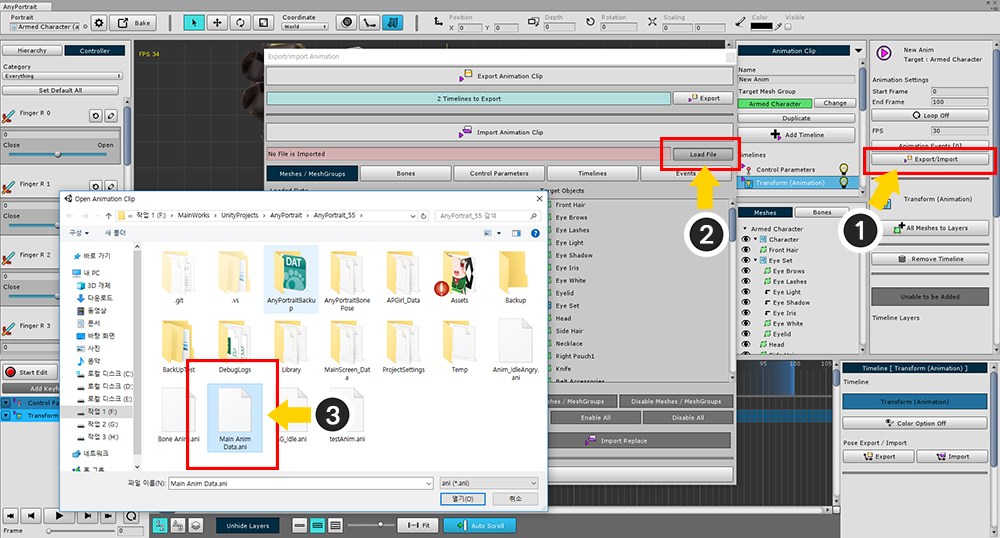
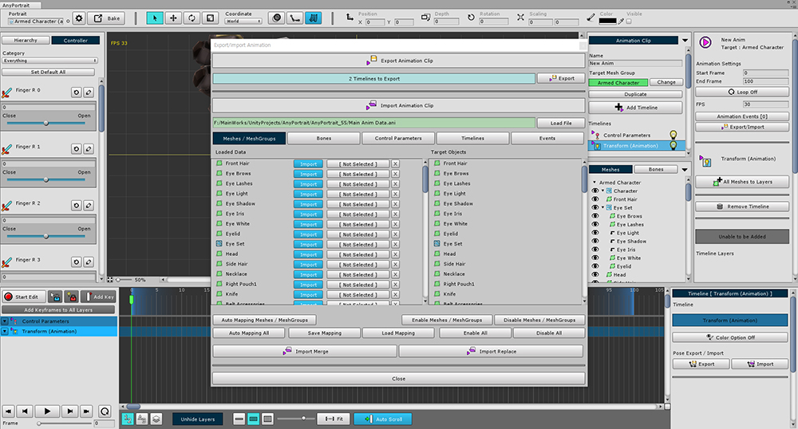
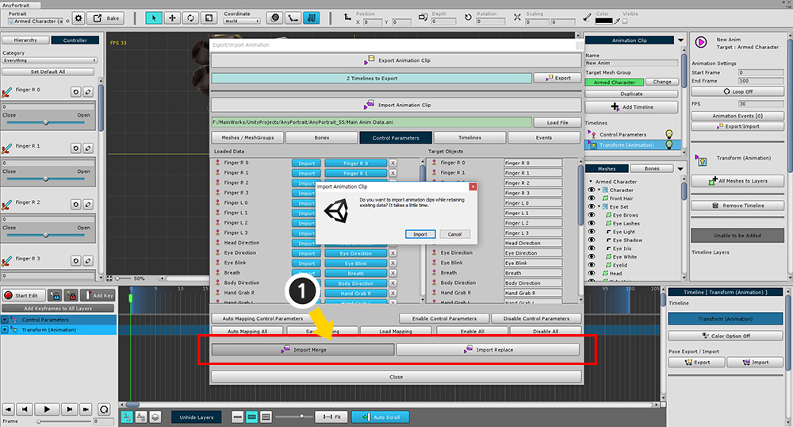

AnyPortrait > マニュアル > アニメーションをエクスポート/インポート
アニメーションをエクスポート/インポート
1.0.0

アニメーションを作成し、これを他のキャラクターに適用する場合があります。
アニメーションをコピーするとき、別の方法で生じたキャラクターにも適用することができる必要があります。
（例えば、他のapPortraitに適用したり、他のメッシュのグループに適用）
アニメーションメニューから (1) 「Export / Import」ボタンをクリックしてダイアログを開いて、アニメーション情報をエクスポートまたはインポートすることができます。
アニメーションをファイルにエクスポート

(1) 「Export」ボタンを押し、ファイルを保存します。
ファイルからアニメーションをインポート

アニメーションを適用するために、私は一時的な空のアニメーションを作成しました。
キーフレームはなく、データが保存されるタイムラインのみです。

(1) 「Export / Import」ボタンを押してダイアログを開きます。
(2) 「Load File」ボタンを押し、(3) 保存したアニメーションファイルを開きます。

保存されたアニメーション情報が下部に表示されます。
「Mesh / Mesh Groups」、「Bones」、「Control Parameters」、「Timelines」、「Animation Event」の各情報をタブで表示します。
この状態に直接インポートすることはできません。
「ファイルデータ」 -> 「適用対象」は、すべてのタブにマッピングする必要があります。

(1) インポート対象の「Not Selected」ボタンを押すと、右の選択可能なターゲットが上記の画面のようにアクティブになります。
(2) 「Select」ボタンを押してマッピングを完了させます。

マッピングが完了すると、上記の画面のように両方の名前が表示されます。

インポートするデータを同じ方法でインポートするために、インポートするデータをマッピングするプロセスを繰り返す必要があります。
しかし、アニメーションが複雑で多くのデータやオブジェクトがある場合、このプロセスには多くの時間がかかります。
したがって、この機能を使用して迅速に一括して接続すると便利です。

(1) 「Auto Mapping Meshes / MeshGroup」 (または現在のタブの名前)ボタンをクリックすると、現在のタブから一括して接続できます。
最も類似した順序で名前で自動的に接続する方法です。

すべてが自動的に名前で接続されています。
マッピングは、現在のタブ、メッシュ、およびメッシュグループでのみ完了します。

(1) 「Auto Mapping All」ボタンを押すと、すべてのタブのすべての項目が自動的に接続されます。
この機能が正しい接続を保証するとは限りませんので、慎重に確認することをお勧めします。

自動化された機能がありますが、そのたびにファイルをターゲットに接続する方法はありません。
マッピング自体をファイルとして保存し、作業を効率的に行うことができます。
マッピング情報を保存するには、(1) 「Save Mapping」ボタンを押します。
保存されたマッピングデータを使用するには、「Load Mapping」ボタンを押します。

構造が異なるか、必要でない場合は、すべてのデータをインポートする必要はありません。
(1) 「Import」ボタンをクリックして無効にすると、対応するデータはインポートされません。
(未接続のデータはインポートされません。)

次に、上記の操作とアニメーションのエクスポート/インポート画面の概要を示します。
1. Export : アニメーション情報をファイルにエクスポートします。
2. Load File : ファイルを開き、ファイルからアニメーション情報をインポートします。
3. Meshes/MeshGroups, Bones, Control Parameters, Timelines, Events : ファイルとターゲットをリンクするプロセスでは、各タイプごとにタブを区切ります。
4. ファイル項目の名前 : ファイルに格納されている各データ項目の名前。 タイプに応じてアイコンが表示されます。
5. ファイル項目の「Import」ボタン : インポート時にファイルとして保存された項目を含めるかどうかを指定します。
6. マップされたターゲット : ファイルアイテムでマップされたターゲット。 ボタンを押して接続を開始します。
7. 切断ボタン : ファイルアイテムとマップされたターゲットを切断します。
8. ターゲットアイテムの名前 : 現在開いているアニメーションとメッシュグループに存在するオブジェクト。
9. マップされたファイル項目 : 接続時にファイル項目の名前が表示されます。
10. これらはバッチ処理機能です。
Auto Mapping (All) : 自動的に名前で接続します。
Save Mapping / Load Mapping : マッピングデータを保存またはロードします。
Enable / Disable (All) : すべてのアイテムのインポート設定を有効または無効にします。
11. Import Merge : ファイルからアニメーションにデータをインポートする。 既存のデータと競合する場合は、既存のデータを保持する。
12. Import Replace : ファイルからアニメーションにデータをインポートする。 既存のデータをファイルのデータで上書きします。

完了したら、 「Import Merge」または 「Import Replace」ボタンをクリックして適用します。
既存のデータを保持する場合は、「Merge」をクリックします。
上書きする場合は、「Replace」をクリックします。

アニメーションデータが正常に適用されたことがわかります。